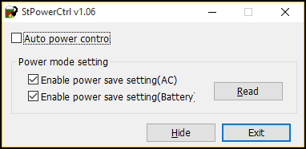

|
Sentech SDK
|
Details of the differences between the camera interfaces(USB3Vision/GigEVision/CoaXPress).
To maximize the limit of USB memory buffer, execute the script in ${STAPI_ROOT_PATH}/bin/setusb.sh (the setting remains until the system is rebooted). To permanently set the memory buffer limit, edit the Linux boot script by adding the following kernel parameter: usbcore.usbfs_memory_mb=0
If Sentech V4L2 driver is installed, either uninstall the V4L2 driver or unload the V4L2 driver module ($ sudo rmmod stcam_dd) before using this software.
Enabling power saving mode of the CPU might reduce the bandwidth of USB bus, which induces frame drops. The performance can be improved by enabling "High performance" option from [Control panel] > [System and Security] > [Power Options]. Depending on the environmental setting, you may also need to use the included tool "StPowerCtrl.exe" to disable the power saving mode.

As the standard of USB3Vision, each PayloadData (image data and/or chunk data) from a camera will be assigned a continuous BlockID. The frames discarded by a camera due to insufficient bandwidth will not be assigned a BlockID. Consequently, it is not possible to detect frame drop by checking the BlockID. The BlockID value can be acquired by IStStreamBufferInfo::GetFrameID() function.
If you input the words other than ASCII encoded text into UserDefinedName, this will cause the Descriptor of USB cannot acquire correct text from it and brings the following limitations:
USB3Vision will not working for following situations:
You can improve the efficiency of the data transmission by increasing the maximum transfer unit (MTU) and socket buffer setting of network device if jumbo frame is supported. In Linux, reverse path filtering setting may need to be modified to allow detection of GigE Camera whose IP address is in different network. To configure the network device, execute the following script:
Firewall or security software might have influence to the packets from GigEVision camera, causing "cannot find camera" or "cannot get image data". You will need to disable the firewall or set related application into exception list for correctly use GigEVision cameras.
You can use IStStreamBufferInfo::GetFrameID() function to acquire a 64 bit BlockID. If the BlockID from camera is in 32 bit format, the acquired BlockID next to 0xFFFFFFFF will be 0x000000001 but still in 64 bit format with this function.
When an application opens a GigEVision camera in control mode or in exclusive mode, the application gains the exclusive access privilege to the camera. The access privilege to the camera will be lost if the camera cannot receive any commands from the application over the time period of DeviceLinkHeartbeatTimeout[in us](or GevHeartbeatTimeout[in ms]). Therefore, StGenTL module regularly sends commands to the connected camera to keep its access privilege. When you stop the application which connected to the camera by using debugger or else, the regularly sent commands will also stop. This will cause the application lost the control previlege. StGenTL module will automatically set DeviceLinkHeartbeatTimeout[in us](or GevHeartbeatTimeout[in ms]) to 300,000[ms] when any debugger is detected while opening a camera. StGenTL module will also send a command to camera every 100[s], which corresponds to 1/3 of the timeout value above. This prevents the previlege lost to the camera if the application stops for less than 200[s] and it can keep running. To enforce a timeout value regardless of the debugger existence, set environment variable "STGENTL_GIGE_HEARTBEAT" to the desired timeout [ms].
If a GigEVision camera is closed normally, the timeout value will be restored to default and the access privilege will be lost. When an application connecting to the camera closes unexpectly due to the timeout or the disconnection of power cable/LAN cable, the camera will not be accessible until it is reset.
This SDK does not support the SFNC-non-compliant gamma table configuration features found in our company 's older GigEVision camera series.
CoaXPress requires 3rd party GenTL modules. Some functions might not work correctly due to the limitation of the GenTL modules. You may need to acquire the latest version of the driver from the board makers.
The value of GenTL::DEVICE_ACCESS_STATUS acquired by using StApi::IStDeviceInfo::GetAccessStatus() might be different from the value of USB3Vision/GigEVision when using different grabber boards of with different versions.